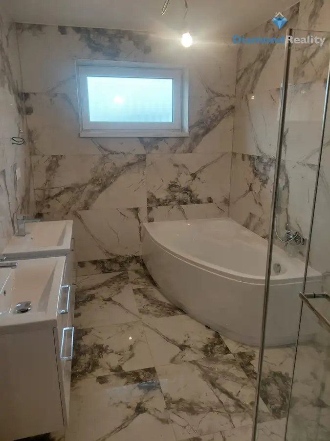
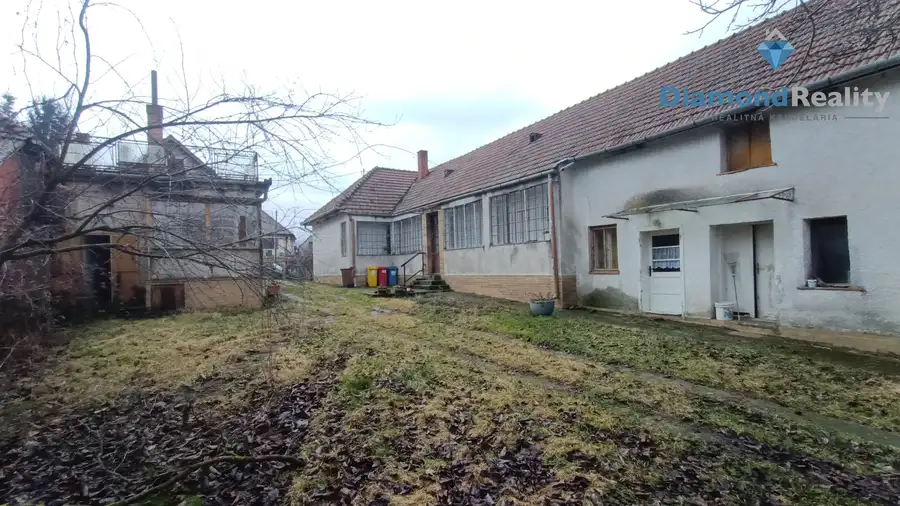

Na predaj rodinný dom s 15 árovým pozemkom 10 minút od centra Nitry v malebnej obci Ivánka pri Nitre
Ivanka pri Nitre
- Plocha375 m²
- StavČiastočná rekonštrukcia
- VlastníctvoOsobné
O nehnuteľnosti
Hľadáte pokojné bývanie s veľkým priestorom, ale nechcete byť ďaleko od Nitry? Tento rodinný dom v Ivanke pri Nitre ponúka príjemnú kombináciu pohodlia, súkromia a rýchlej dostupnosti do mesta – centrum Nitry je vzdialené približne 10 minút.Dom má 375 m² úžitkovej plochy, nachádza sa na veľkom pozemku s výmerou 1 504 m² a ponúka 6 obytných izieb. Vďaka svojej veľkosti je vhodný pre väčšiu rodinu, viacgeneračné bývanie alebo pre tých, ktorí potrebujú doma dostatok priestoru na prácu či hobby.Dom je ihneď obývateľný na dome prebehla čiastočná rekonštrukcia: plastové okná, nová kuchyňa, plávajúce podlahy, dlažba.Čo určite stojí za pozornosť:veľký pozemok 1 504 m²6 iziebgaráž a prístrešok pre autopivnica pod celým domom – 136 m² - v pivinici nájdete vínnu pivnicu ako aj pec pre gazdinénová kuchynská linkaobývacia izba s kachľami na drevologgia zo spálne s priamym vstupom do záhradybalkónklimatizáciaoptický internetvlastná studňa + obecná vodazásuvka 380 V, vhodná napríklad do dielnepríjemne orientovaná juhozápadná záhradaDom ponúka množstvo možností, ako si jednotlivé priestory prispôsobiť vlastným potrebám. Veľká záhrada je ideálna na oddych, pestovanie, detské hry alebo letné posedenia s rodinou a priateľmi.LokalitaIvanka pri Nitre ponúka pokojné bývanie s veľmi dobrou dostupnosťou do mesta. Autobusová zastávka je približne 550 m od domu, základná škola približne 1,4 km. V obci nájdete aj park, obľúbenú čokoládovňu LYRA a základnú občiansku vybavenosť.Mesačné náklady: plyn cca 150 € + elektrina cca 70 €.Cena: dohodou.Najlepšie financovanie je v cene.Energetický certifikát nebol dodaný.Predaj zabezpečuje:Ing. Bernardína BeneováDiamond reality Nitra, s.r.o.📞 0917 685 628 ✉️ beneova@diamondreality.skAk hľadáte veľký dom s veľkým pozemkom a zároveň chcete byť na skok od Nitry, určite sa oplatí prísť sa pozrieť osobne.
Parametre
| Druh | Rodinný dom |
|---|---|
| Dátum zverejnenia | 18. 9. 2026 |
| Plocha pozemku | 1504 m² |
| Stav nehnuteľnosti | Čiastočná rekonštrukcia |
| Typ | Predaj |
| Vlastníctvo | Osobné |
| Vybavenie | Balkón, Lodžia, Terasa, Garáž, Pivnica |
| Zastavaná plocha | 140 m² |
| Úžitková plocha | 375 m² |
Kde to je


Mohlo by Vás zaujímať

DomNové10 259 000 €Na predaj novostavba Golianovo Golianovo 128 m² Diamond reality Nitra ponúka na predaj novostavbu 4 izbového nízkoenergetického bungalovu v obci Golianovo. RD je na pozemku o rozlohe 529 m2, so…
DomNové10 174 000 €Investičná príležitosť!!!na predaj – dva rodinné domy na pozemku 2 624 m², Bádice Bádice 160 m² Ponúkame na predaj dva rodinné domy nachádzajúce sa v obci Bádice na veľkorysom pozemku o celkovej výmere 2 624 m². Nehnuteľnosť predstavuje výbornú… DomNové8 89 000 €NA PREDAJ rodinný dom v malebnej obci Bádice za lákavú cenu Bádice 160 m² Ponúkame na predaj rodinný dom nachádzajúci sa v obci Bádice na pozemku o celkovej výmere 624 m². Nehnuteľnosť predstavuje výbornú príležitosť pre…